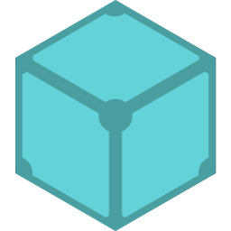
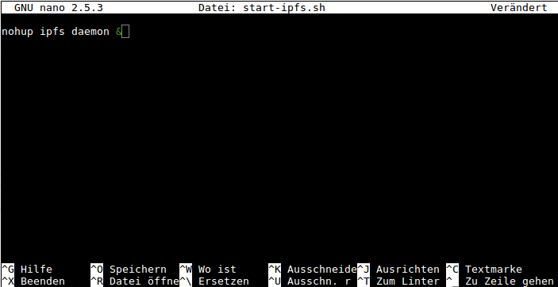

Ipfs Installation auf Ubuntu NAS
Unter dem Begriff Web 3 verstehe ich nicht das Internet der Dinge (IOT) und den damit verbundenen Smarthome - Spielereien.
Typische Server - Client Anwendungen, so wie man sie bisher kennt und nutzt, sind…
- unsicher
- angreifbar
- zensierbar
Deshalb habe ich schon vor längerer Zeit damit begonnen dieses Blog, parallel zum typischen Server- Hosting, ins P2P Gelände auszusiedeln. Zeronet und Dat waren die beiden ersten DApps . Und last but not least ist heuer IPFS neu hinzugekommen.

Da ich hier einen Ubuntu NAS herumstehen habe, welcher nicht mal annähernd ausgelastet ist und mehr vor sich hin idelt als das er was zu schuften hätte, bietet es sich an, auf diesem Teil einen ipfs Knoten zum Seeden meines Blögleins zu installieren.
Die Installation gestaltet sich als recht simpel.
Zuerst loggt man sich per ssh auf dem Nas ein und lädt mittels wget das Archiv go-ipfs herunter.
wget https://dist.ipfs.io/go-ipfs/v0.4.15/go-ipfs_v0.4.15_linux-386.tar.gz
danach entpackt man das Archiv
tar -xvzf go-ipfs_v0.4.15_linux-386.tar.gz
und wechselt in das Verzeichnis
cd go-ipfs/
Danch startet man die Installation
sudo ./install.sh
Das Script macht nix anderes als das es die ausführbare bin-datei ipfs nach /usr/local/bin/ kopiert. Deswegen muß es als root ausgeführt werden.
Jetzt können wir unsere IPFS Peer ID estellen.
ipfs init
ausgabe im Terminal :
generating 2048-bit RSA keypair...done
peer identity: QmVF4FvcS6zwh33U96F4FkbKivMgqPMR24pxDbXguiKXtv
Unter dieser Peer Identität sind fort an alle mit IPFS geteilten Inhalte erreichbar !! Die IPFS URL lautet dann so :
ipns/QmVF4FvcS6zwh33U96F4FkbKivMgqPMR24pxDbXguiKXtv/
Vorsicht ! ipfs init sollte nur ein einziges mal ausgeführt werden. Und zwar direkt nach der erst Installation. Ein erneuter Aufruf zu einem späteren Zeitpunkt würde nämlich eine neue Peer ID sowie ein neues keypair generiereren, was zur Folge hätte, das alle zuvor mit IPFS publizierten Dateien und Verzeichnisse nicht mehr erreichbar wären.
Als nächstes müssen wir uns noch ein Start - Script für den ipfs - daemon bauen. Tut man das nicht, würde sich der ipfs- daemon nach dem verlassen der ssh- Session sofort wieder beenden. Und das wollen wir ja nicht.
Das Script soll start-ipfs.sh heissen. Dazu starten wir im selben ssh Terminal einen Texteditor. Ich bevorzuge nano.
nano start-ipfs.sh
und fügen folgenden Inhalt hinzu.
nohup ipfs daemon &

Mit STRG + O speichert man das ganze. Und mit STRG + X beendet man nano wieder.
Das neu erstellte start-script muß man als ausführbar markieren !
chmod +x start-ipfs.sh
Der ipfs - daemon lässt sich nun starten, indem man das script aufruft.
./start-ipfs.sh
Jetzt kann man damit beginnen Dateien und oder ganze Verzeichnisse dem IPFS Netz bekannt zu machen. In meinem Fall ist es dieses Blog, welches im Verzeichnis ~/hugoblog abgelget ist.
ipfs add -r hugoblog/
Ausgabe im Terminal :
added QmeWub1BxXXpy451JraLR8LfZjCCYju4SGH3nD9YkfcDtB hugoblog/tags/zeronet/page
added QmQJ17tdVV2sNe6kSm8brwWJMV9NgUevxwwszgmZKz1TrT hugoblog/tags/zeronet
added mYjGJ5fSoh9Fq2yuS6Lj2M4bFSW5VdtNKPGdhejW4T69o hugoblog/tags
added QmWzWWQVeP1SU6JAW2KhKTeX2qKNivdqLYyAUTzNYM6uxo hugoblog
Bei verzeichnissen ist immer der letzte Hash- wert relevant ! Weil wir nur diesen Hash publizieren müssen und nicht die einzelnen hashes der jeweiligen Dateien.
ipfs name publish QmWzWWQVeP1SU6JAW2KhKTeX2qKNivdqLYyAUTzNYM6uxo
Mehr ist nicht notwendig.
Wir erinnern uns.
Alle geteilten Inhalte sind immer unter der selben Peer ID erreichbar !
ipns/QmVF4FvcS6zwh33U96F4FkbKivMgqPMR24pxDbXguiKXtv/
und nicht zu verwechseln mit dem zuletzt generierten Hashwert !
Wenn zu einem späteren Zeitpunkt neue Inhalte hinzukommen, wovon ich ausgehe, oder man bestehende Inhalte verändert, wiederholt man einfach die beiden letzten Schritte.
ipfs add -r hugoblog/
added QmVCY68k2EgyeQSwuBHzeqFSHkCJA2zAghF1zAkducPc5V hugoblog/tags/zeronet/page
added Qmf3zvfDA2dAczuc6SSEmicSsci7FTYMboDn3yWpzt5Utv hugoblog/tags/zeronet
added QmaR2tcM68SQArX2midXWdMRETMFyrnkuxtTR4QxpRFbdo hugoblog/tags
added QmdixJFKW8K8QmskW2w5Pn3GxmRfD2d8BNEY2CC3nJLKhJ hugoblog
ipfs name publish QmdixJFKW8K8QmskW2w5Pn3GxmRfD2d8BNEY2CC3nJLKhJ
Die zur Zeit aktuelle Adresse zu diesem Blog
ipns/QmbpZHWRAwJ4MaYLog3NjbHxvDc5Ney1qWLXEPwSGXcJc9
TIPP :
Die Brave Browser Entwickler haben die Unterstützung von IPFS mittels lokalem IPFS Node implementiert. Damit lassen sich im IPFS gehostete Websites direkt besuchen.